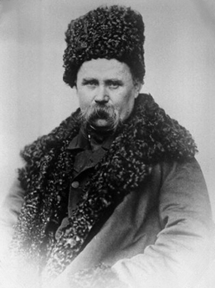

Тара́с Григо́рович Шевче́нко (відомий також як Кобза́р; 25 лютого (9 березня) 1814, с. Моринці, Київська губернія, Російська імперія (нині Звенигородський район, Черкаська область, Україна) — 26 лютого (10 березня) 1861, Санкт-Петербург, Російська імперія) — український поет, письменник (драматург, прозаїк), художник (живописець, гравер), громадський та політичний діяч. Національний герой і символ України.
Братчик Кирило-Мефодіївського братства. Академік Імператорської академії мистецтв (1860).
